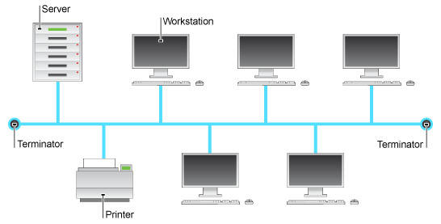
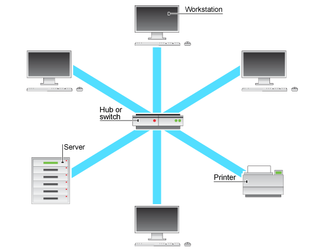
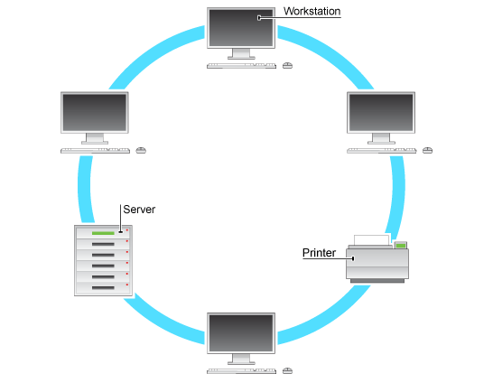
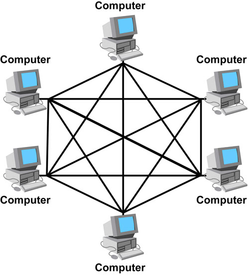
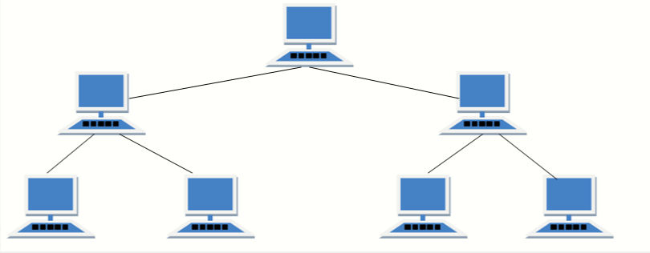

Network Topology
There are 5 types of network topologies:
- Bus topology
- Star topology
- Ring topology
- Mesh topology - (most common)
- Tree topology - (least common)
| Topology | Diagram | Advantages | Disadvantages |
| Bus |  |
- Works well when you have a small network.
- It requires less cable length than other topologies.
|
- It can be difficult to identify problems if whole network goes down.
- Not great for large networks.
- Terminators are required for both ends of main cable.
|
| Star |  |
- Reliable - if one cable or device fails, then all others continue to work.
- 0 to little data collisions.
|
- Expensive.
- It requires a lot of cable length.
- If the central hub fails, every node in network fails!
|
| Ring |  |
- Data transfer is quick.
- 0 to little data collisions.
|
- If main cable fails, or any device is faulty, whole network fails.
- Expensive.
|
| Mesh |  |
- If 1 of the connections goes down, there will be lots of other routes that can be taken to get to the same destination.
|
- Expensive.
- Requires the most cable of all topologies.
- The more nodes you have, the bigger the NIC's become.
|
| Tree |  |
- Scalable as leaf modes can accommodate more nodes in hierarchical chain.
|
- Expensive.
- Lot's of maintenance is required.
- Backbone forms the point of failure.
|